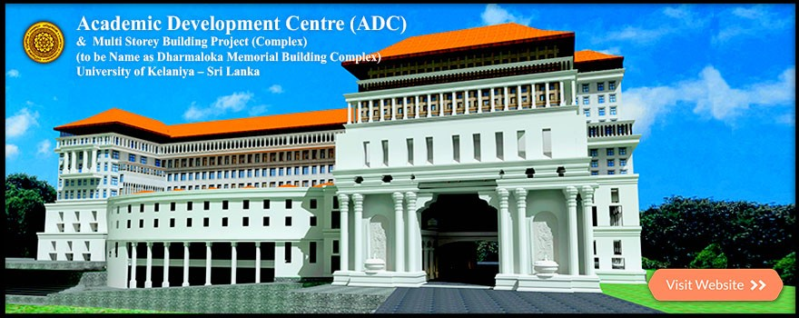

FACULTIES
Commerce & Management
Computing and Technology
Graduate Studies
Humanities
Medicine
Science
Social Sciences
UNITS & CENTRES
Career Guidance Unit
Centre for Heritage Studies
Center for Chinese Studies
Centre of Excellence for Strategic Brand Identity Development (CESBID)
Centre for Gender Studies
Centre for Japanese Studies
Centre for Korean Studies
Center for Sustainability Solutions (CSS)
Confucius Institute
EDCON
Extracurricular Unit
ICCMS
ICT Centre
Media Unit
Quality Assurance Centre
Research Council
Staff Development Centre
Statistics & Data Monitoring Unit
Technology and Innovation Support Centre
Art Council
The Samkathana Research Centre
INSTITUTES
Gampaha Wickramarachchi Ayurveda Institute
Postgraduate Institute of Archaeology
Postgraduate institute of Pali & Buddhist Studies
Stay connected with us